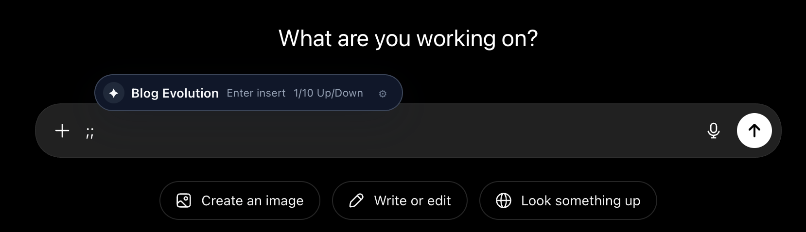

Quick Start
Build the extension, load the generated dist/ folder, and test the command helper in a normal web page.
Install from source
git clone https://github.com/orkunkinay/promptdeck.git
cd promptdeck
npm install
npm run build- Open
chrome://extensions. - Enable Developer mode.
- Choose Load unpacked.
- Select
dist/. - Open a page with a text field and type
;;.
Open the manager
Use the browser action, the extension options page, or the configured extension command.
- macOS:
Command+K - Windows/Linux:
Ctrl+K
After rebuilding locally, reload the extension in chrome://extensions and refresh pages where PromptDeck should run.
Surfaces
PromptDeck runs across four surfaces that share one prompt model and one backup format. The browser uses IndexedDB; the CLI and VS Code share a local JSON file (default ~/.promptdeck/library.json). Backups bridge the two.
Browser extension
The ;; autocomplete helper on editable fields, plus the manager UI for prompts, versions, variants, settings, and backups.
npm install
npm run build # load dist/ as an unpacked extensionTerminal CLI
Search, print, copy, create, edit, and delete prompts from the command line. --edit opens a prompt document in your editor for multiline authoring.
npm run build:cli && npm link
promptdeck search refactor --json
promptdeck add /paper-reading --edit
promptdeck edit /commit-message --edit --new-versionVS Code extension
Search, insert, copy, and author prompts through the Command Palette, Quick Pick, and PromptDeck sidebar. Saving promptdeck: documents updates the shared file library.
cd extensions/vscode
npm run build # then press F5 to launchNative desktop / clipboard
Copy a resolved prompt and paste into any native app (ChatGPT Desktop, Claude Desktop, editors). Bind to a global shortcut or launcher.
promptdeck copy /paper-reading:short
promptdeck pick # interactive search + copyOne library across surfaces
The browser and file stores are separate by design, but the same backup format bridges them. The CLI and VS Code extension already share ~/.promptdeck/library.json.
# Seed the file store from a browser backup
promptdeck import ~/Downloads/promptdeck-backup.json --mode merge-update
# Export the file store as a browser-compatible backup
promptdeck export promptdeck-from-cli.jsonUsage
PromptDeck separates the trigger from prompt commands. The default trigger is ;;; prompt commands are stored as slash commands such as /paper-reading.

Autocomplete helper
Type the trigger, keep typing to search, then insert or copy the selected prompt.
Keyboard behavior
EnterorTab: use the selected prompt.ArrowUpandArrowDown: move through results.Command+ArrowDownorCtrl+ArrowDown: expand the result menu.Command+EnterorCtrl+Enter: copy the selected prompt.Shift+Enter: keep the typed command and append the prompt.Escape: close the helper.
Versions
Saves create immutable prompt versions unless the edit is marked as minor. The version rail can set defaults, restore old content as latest, delete older entries, and compare versions line by line.
Variants
Variants are intentional alternatives. A suffix such as short can be selected with a command like ;;paper:short.
Placeholders
Tokens like {{paper_text}} are detected and tracked as metadata. Current insertion preserves them exactly as saved.
Prompt documents
The CLI editor flow and VS Code prompt documents use YAML-style frontmatter plus a Markdown body, so long prompts can be edited without touching raw JSON.
---
command: /paper-reading
aliases: [/paper, /read]
tags: [research, summarize]
---
Prompt body with {{placeholders}}Configuration And Data
The manager exposes the settings that matter during normal use. There are no required environment variables for local development or extension runtime.
| Setting or data | Default | Where it lives | Notes |
|---|---|---|---|
| Trigger | ;; |
chrome.storage.local |
Used by the content script command parser. |
| Insertion mode | prefer-direct |
chrome.storage.local |
Can prefer direct insertion, always copy, or ask every time. |
| Theme | system |
chrome.storage.local |
The manager follows system, light, or dark mode. |
| Prompt library (browser) | Seed prompts on first run | IndexedDB database PromptDeckDB |
Stored through Dexie with prompt indexes and migrations. |
| Prompt library (CLI / VS Code) | Seed prompts on first run | ~/.promptdeck/library.json |
Override with PROMPTDECK_LIBRARY or PROMPTDECK_HOME; respects XDG_DATA_HOME and %APPDATA%. |
| Backup files | Manual export | User-selected JSON files | Contain prompt text, versions, variants, and settings. |
Architecture
The codebase is a Vite and React extension with a service worker boundary, content script insertion layer, local storage repository, and shared domain services.
Runtime boundary
src/background/index.ts validates runtime messages and performs prompt and settings operations through repository services.
Content script
src/content/ detects commands in active editables, renders the helper in shadow DOM, searches prompts, and inserts or copies resolved content.
Manager UI
src/options/ contains the React dashboard for prompt editing, settings, backups, import previews, versions, variants, and Markdown export.
Storage
src/shared/storage/ uses Dexie for prompts and migrations. Settings use a small service around chrome.storage.local.
Search
src/shared/search/fuzzySearch.ts ranks by exact aliases, title, tags, fuzzy matches, favorites, recency, usage, and host-specific use.
Backups
src/shared/backup/ defines backup schema, validation, migration, import planning, conflict handling, and apply modes.
Prompt documents
src/core/promptDocument.ts serializes prompts to an editable frontmatter format used by CLI --edit and the VS Code promptdeck: file provider.
Development Workflow
Use the Vite dev server for UI iteration, but use built extension output for realistic content script and service worker testing.
Common commands
npm run dev
npm run typecheck
npm test
npm run build
npm run test:e2e
npm run package:chromenpm run test:e2e requires dist/manifest.json, so build first.
Package policy
The Chrome packaging script validates Manifest V3, exact permissions, missing package files, and remote script references before creating promptdeck-chrome-extension.zip.
Required permissions are intentionally limited to storage and clipboardWrite.
Troubleshooting
Most issues come from extension reload state, restricted browser pages, command collisions, or editor-specific insertion behavior.
Helper does not open
Check the configured trigger, refresh the page after reloading the extension, avoid chrome:// pages, and confirm the current host is not disabled.
Prompt copies instead of inserts
Some rich editors reject synthetic edits. PromptDeck falls back to clipboard and supports an insertion setting for direct, copy-only, or ask-every-time behavior.
Save reports a collision
Commands and aliases must be unique across prompts. Choose a different command or remove the conflicting alias.
Data is tied to the current browser profile. Export JSON backups before clearing browser data, uninstalling the extension, or changing profiles.
More Project Docs
The repository includes focused docs for contribution, privacy, security, release notes, and future work.
Contributing
Setup, quality checks, code style, storage guidance, and pull request expectations.
Privacy
Data storage, local-first behavior, permissions, backups, and user caution.
Security
Vulnerability reporting, sensitive areas, and current security posture.
Roadmap
Reliability, provider support, prompt management, import/export, accessibility, and testing notes.
Changelog
Release preparation notes and notable changes.
License
MIT license terms.